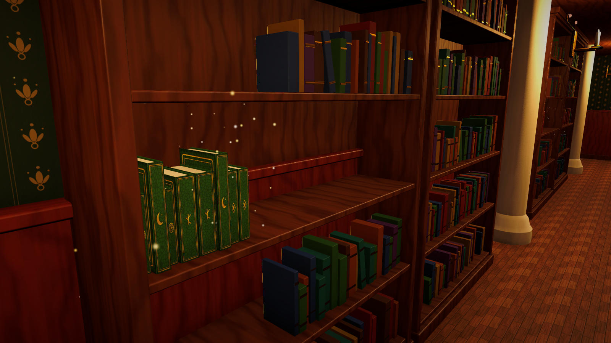
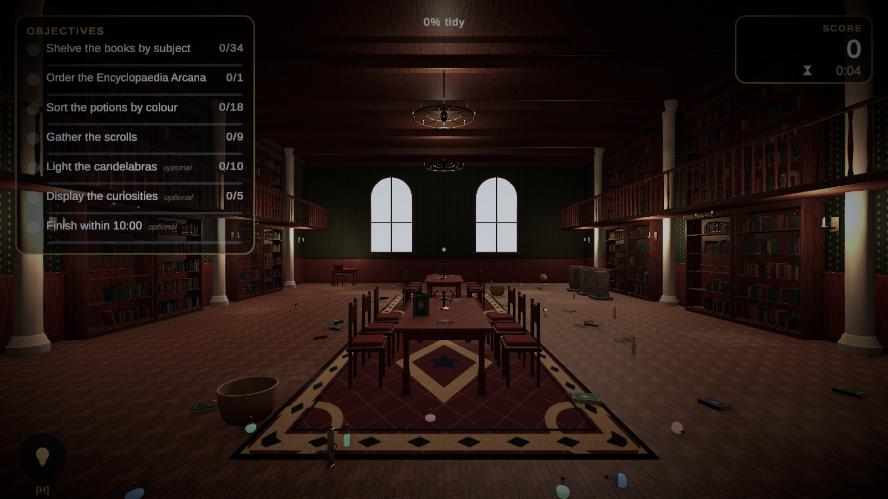

Creating Your First Level
A complete walkthrough: a small study where the player shelves books by colour, files an encyclopaedia in order and clears the floor onto a desk. No code is written.
Demo/Scenes/TidyUp_Sandbox to see the finished result of this tutorial, or follow along in a new scene. The demo assets used here live in Demo/Prefabs/Library and Demo/Data; use your own models if you prefer.Tutorial: creating a book sorting level
-
Create the scene and a Level Definition.
Create a scene, add a floor and save it as
MyStudy. In the Project window choose Create > Tidy Up Framework > Level Definition, name itLevel_MyStudy, set Display Name to "My Study" and Scene Name toMyStudy. -
Create categories.
Create > Tidy Up Framework > Category:
Books, thenHistory,Star ChartsandEncyclopaediawithBooksas their parent. Give each a display colour. -
Create book object definitions.
Create > Tidy Up Framework > Object Definition for each book. Set the category and add a colour tag (
Redfor history,Bluefor star charts). For encyclopaedia volumes set the category toEncyclopaediaand a Sequence Index (1, 2, 3...). Tick Stackable if books may also be stacked. -
Place the books.
Drag your book models (or the demo prefabs) into the scene and scatter them on the floor and desk. Select them and run Tools > Tidy Up Framework > Make Selected Objects Interactive, then assign each definition. Demo prefabs are already configured.
-
Place shelves.
Add a bookcase model. On each shelf board choose GameObject > Tidy Up Framework > Placement > Shelf Row (Packed). Position the row at the left end of the board, set Length to the board width and Item Euler Rotation to
(0, 90, 0)so spines face the player. Resize the aim trigger to cover the shelf opening.
Three shelf rows with their gizmos and aim triggers. -
Configure shelf rules.
Top row: Acceptance > Categories =
Books, Required Tags =Red, Target Id =shelf_red. Middle row: the same withBlue(shelf_blue). Bottom row: Categories =Encyclopaedia, Ordering =Sequence, Completion Mode =When All Matching Objects Placed(shelf_history). Add a Free Placement Zone on the desk that acceptsCuriosities. -
Create objectives.
Create > Tidy Up Framework > Objectives > Place Objects: filter Categories =
Books, Required Tags =Red, Required Count = 0 (all), title "Shelve the red books {current}/{target}". Repeat for blue. Add Complete Targets with target idshelf_history, title "File the encyclopaedia in order". Optionally add a Place Objects objective for the desk and tick Optional. List them inLevel_MyStudy. -
Add the level systems.
GameObject > Tidy Up Framework > Complete Level Setup. Assign
Level_MyStudyto the Level Manager. Move the player to the doorway. -
Validate and test the level.
Run Tools > Tidy Up Framework > Level Validator. Fix errors (missing aim colliders, duplicate ids, scene not in build) with the Fix buttons, then press Play: pick books up, aim at the shelves, watch the ghost preview, complete the objectives and read your results.

Playing the finished level: hover outline, prompts, objectives and the ghost preview on the shelf. -
Add it to the game and build.
Add
Level_MyStudyto your Level Catalog, set its unlock requirement, add the scene to the build list and build. It appears in Level Select with stars and best times.
Acceptance test: a level from a blank scene
This is the checklist used to validate the framework. Every step is possible without writing code.
| # | Step | How |
|---|---|---|
| 1 | Add the player | GameObject > Tidy Up Framework > Player |
| 2 | Add interactive objects | Make Selected Objects Interactive |
| 3 | Create a category | Create > Tidy Up Framework > Category |
| 4 | Create a sorting zone | GameObject > Tidy Up Framework > Placement > Container |
| 5 | Configure the sorting rule | Container > Acceptance > Categories |
| 6 | Create an objective | Create > Tidy Up Framework > Objectives > Place Objects |
| 7 | Add the level manager | GameObject > Tidy Up Framework > Level Systems (+ HUD) |
| 8–12 | Play, pick up, move, place, receive feedback | Press Play |
| 13–15 | Complete the objective, receive a score, complete the level | Results screen appears |
| 16 | Save progress | Automatic through the save service |
| 17–18 | Return to Level Select and see the completed level | Results > Menu > Level Select (when the level is in the catalog) |
| 19 | Create another level without new gameplay code | Duplicate the scene and level definition, change rules |